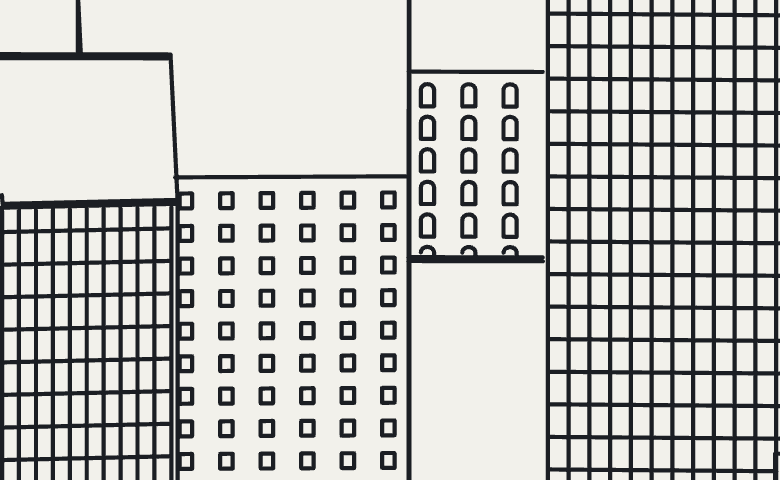
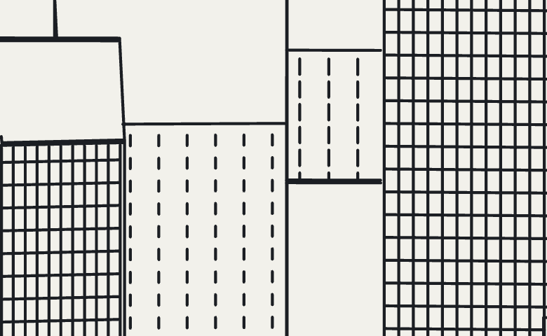
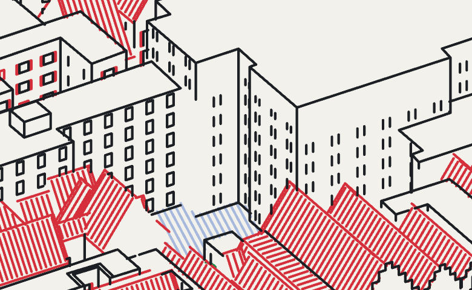
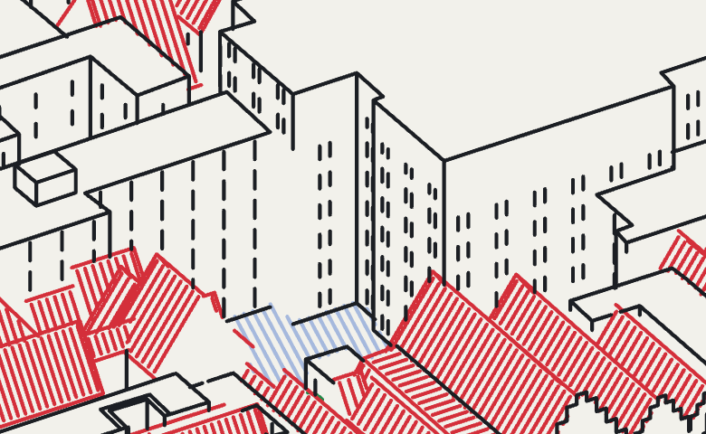

15 November 2026 · Original review · Round 5
Small framed windows now test the clear space inside their projected outline. The renderer measures perpendicular separation in both dimensions and subtracts one physical pen width for the ink. A sloping edge can no longer qualify a frame whose opposite sides nearly touch.
Openings that fail use the existing upright-stroke representation, retaining their column and floor positions. Glazing bars use the same interior-space test with a larger threshold. Wide but shallow windows therefore lose bars before their interiors become dense. Buildings, window placement and the façade patterns remain unchanged.




Three places at two scales, Detail 1 and a 0.35 mm pen, optional OSM tags off. Times are estimates. At 1:1000 the quieter frames reduce ink and save roughly two to three estimated minutes per sheet. At 1:2000 all three drawings are unchanged because the affected windows were already simplified.
| Sheet | Waste before → after | Estimated time change |
|---|---|---|
| Midtown Manhattan 1:1000 | 3.4% → 3.4% | -2.6% |
| Midtown Manhattan 1:2000 | 6.2% → 6.2% | +0.0% |
| Sapporo 1:1000 | 7.2% → 7.1% | -1.7% |
| Sapporo 1:2000 | 13.6% → 13.6% | +0.0% |
| Amsterdam 1:1000 | 6.8% → 6.5% | -3.1% |
| Amsterdam 1:2000 | 10.3% → 10.3% | +0.0% |
Before lab report · After lab report (local generated files)
Reviewed all 12 golden sheets, six LOD sheets and the enlarged comparisons above. Seven goldens change in window linework and its plot/SVG summaries. Classification, building placement and other feature strokes remain unchanged. The legacy “houses” statistic also changes in five cases: it counts buildings with any red-pen line, including shutters, rather than consulting roof classification. Simplifying shuttered windows exposes this existing reporting quirk; no roofs were removed. Other counts remain unchanged.
Regression tests cover oblique frames with regular and broad pens, wide shallow windows losing glazing bars, and the ink allowance itself. The full suite also checks panning, determinism, setting gates and valid linework. No physical proofs were inspected, nor all 29 presets or every seed, bearing and Detail combination. Dense balcony rails, small shutters and broader composition remain for later work.